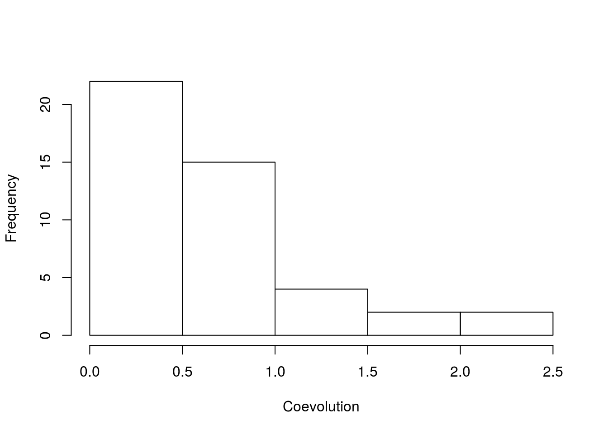
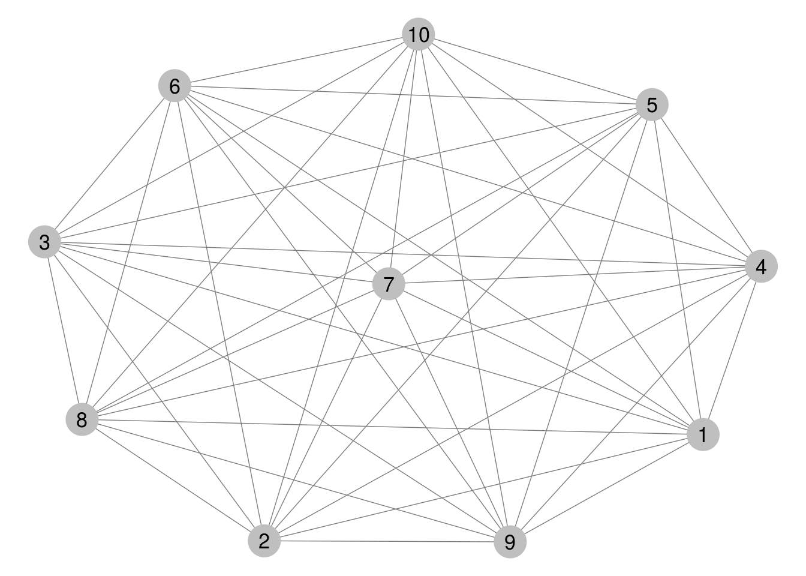
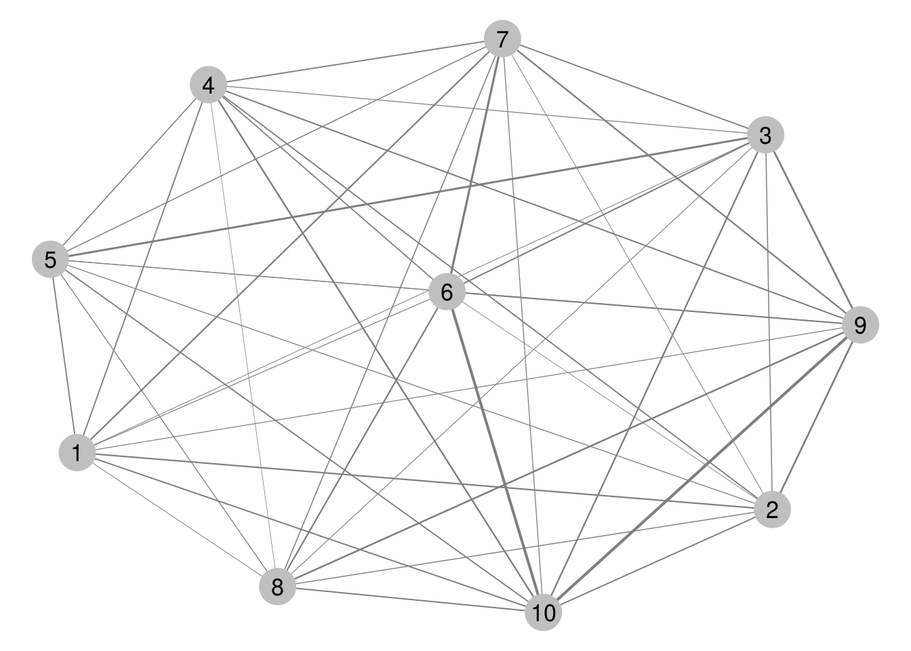
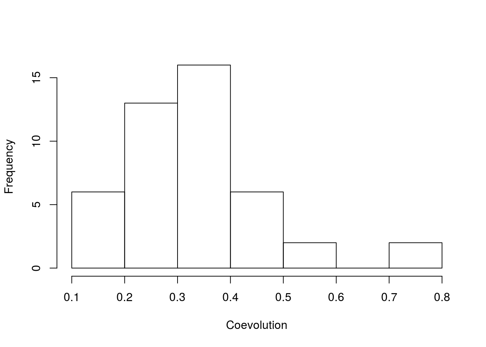
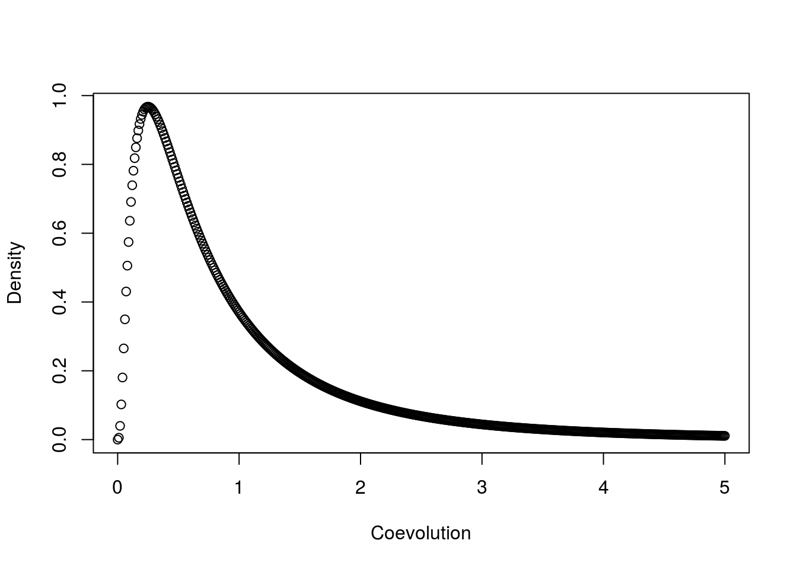
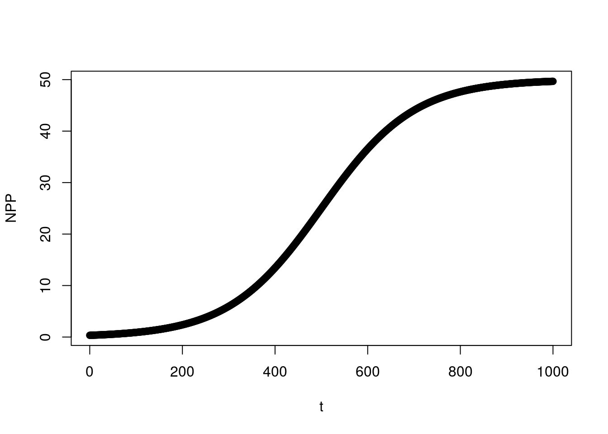
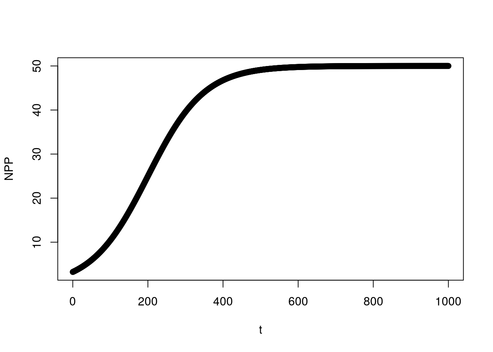

Proposal Outline
Cover Sheet
Project Summary
Develop novel theoretical techniques to investigate the (co)evolution of ecological communities.
Intellectual Merit
Synthesizes coevolutionary theory and community ecology.
Broader Impacts
N/A
Background
Coevolution and its measurement
I define an interaction community as a graph whose vertices represent a set of species and is connected in the graph-theoretic sense by edges which represent pairwise interactions. This means that for any two species, we can traverse the community via pairwise interactions to get from one species to any other species. If the graph is disconnected, I refer to this set of species as a composite community since it would be the union of a set of component interaction communities.
A coevolving community is a subset of an interaction community that is connected in the graph-theoretic sense by coevolving pairs of species. Thus, an interaction community is a coevolving community if all of its members have sufficient genetic variation. In light of the above discussion, all interaction communities are trivially coevolving communities. The primary difference between the two is perspective. One notion focuses merely on whether or not species interact while the other includes the strengths by which they coevolve.
It is important to distinguish between species that have coevolved and species that are currently coevolving. The classic idea of coevolution involves the observation of a pair of traits in two interacting species that appear well matched. Textbook examples include the proboscis length of Darwins moth and the corolla length of Darwins orchid as well as the levels of TTX in the flesh of newts of the genus Taricha and the resistance to TTX in the predatory snakes Thamnophsis sertalis. These are traits that have supposedly evolved over relatively long periods of time through the interactions of these species pairs. What makes these cases especially distinct as putative examples of coevolution is the fact that both traits in each pair are abnormal and thus seem to have simultaneously evolved in response to the interaction. This reciprocal response to selection induced by their interaction is the definition of coevolution provided by Daniel Janzen (citation).
However, by this definition alone, these classic cases of potentially coevolved traits provide only a small subset of all the coevolution that has occurred and is occurring in nature. By this definition, species are not required to interact for long periods of time to coevolve. Instead they just need to exert reciprocal selection on one another and also respond to that selection. For any pair of interacting species there is certainly some amount of selection being imparted by one onto the other, though the strength of this selection may be so trivial it would escape any method of detection ever concieved. Hence, so long as there is sufficient genetic variation underlying the trait in both parties, any currently interacting pairs of species are coevolving by default. If their coevolution is having noticable impacts on the evolutionary trajectories of these species, the situation returns to the colloquial notion of coevolution.
The point is not that the currently accepted definition of coevolution needs to be modified, but that it implies a much broader set of situations than typically thought of. This observation leads neatly to notioins of coevolution in the broader community context where a set of many interacting species are considered at once.
In quantitative genetics the breeder’s equation is the primary engine that drives many models of evolution. This equation can be written \(\Delta\bar z=G\beta\) where \(\Delta\bar z\) represents the change in mean trait of a population over a single generation, \(G\) is the additive genetic variance of that trait and \(\beta\) is the selection gradient that denotes the magnitude and direction of selection. We can partition the selection gradient into biotic \((\mathcal{B})\) and abiotic \((\mathcal{A})\) sources to obtain \(\beta=\mathcal{B}+\mathcal{A}\). For a collection of species I write \(\mathcal{B}_{ij}\) for the biotic selection gradient imposed on species \(i\) by species \(j\). The net biotic selection gradient for species \(i\) is \(\mathcal{B}_i=\sum_j\mathcal{B}_{ij}\). By Janzen’s definition species \(i\) and \(j\) are coevolving iff \(|\mathcal{B}_{ij}|,|\mathcal{B}_{ji}|>0\) and \(G_i,G_j>0\). Note that for a pair of coevolving species it is not necessary for \(|\beta_i|,|\beta_j|>0\) or for \(|\mathcal{B}_i|,|\mathcal{B}_j|>0\) since the net effect of many interactions, both biotic and abiotic, may cancel with each other to produce no overall change in \(\bar z_i\) or \(\bar z_j\). Of course, \(\Delta\bar z_i=0\) only if a delicate balance is held. By subsequently setting \(\mathcal{B}_{ij}\) to zero would result in \(\Delta\bar z_i=-G_i\mathcal{B}'_{ij}\) where \(\mathcal{B}'_{ij}\) is the previous biotic selection gradient. Hence, the absence of change can be the response to selection implied by coevolution.
Returning to the point being made above, for any pair of interacing species \((i,j)\) the probaility that either \(\mathcal{B}_{ij}\) or \(\mathcal{B}_{ji}\) are equal to zero is zero. Using the same argument for the magnitudes of \(G_i\) and \(G_j\), then we will always find at least some \(\epsilon\)-amount of coevolution for any given pair of interacting species. This is fine; it should be understood that coevolution is continuous in value, not binary. Also, the triviality of this notion of coevolution does not remove its relevance, but emphasizes the need to measure it. I define the strength of coevolution between species \(i\) and \(j\) as \(C_{ij}=G_iG_j|\mathcal{B}_{ij}\mathcal{B}_{ji}|\). From this metric we can construct other measurements that provide insight into the coevolutionary structure of communities. For example suppose species \(i\) interacts with the set \(I_i\) of species and \(j\) interacts with \(I_j\). Set \(\gamma_i={\mathrm{argmax}}_{l\in I_i}\{C_{il}\}\). If \(\gamma_i=j\) and \(\gamma_j=i\) then coevolution is strongest between species \(i\) and \(j\) than between \(i\) and any of its partners other than \(j\) and likewise for \(j\). As this particular strength of coevolution increases above the rest, a pairwise coevolutionary situation emerges.
Once again, however, there is no threshold from which the coevolutionary relationship between this pair of species immediately transitions to pairwise. Setting \(\lambda_i={\mathrm{argmax}}_{l\in I_i\setminus\{\gamma_i\}}\{C_{il}\}\), one potential measure of pairwise coevolution is \(C^2_{ij}-C_{i\lambda_i}C_{j\lambda_j}\). But this would only make sense when \(\gamma_i=j\) and \(\gamma_j=i\). Instead we need a notion that describes the degree to which a species is uniquely evolving in response to another species. I call this evolutionary affinity and for species \(i\) it can be captured by \(\phi_i\equiv C^2_{i\gamma_i}-C_{i\lambda_i}C_{\gamma_i\lambda_{\gamma_i}}\) (note that when \(\phi_i=\phi_{\gamma_i}\) this corresponds to a measure of pairwise coevolution since it implies that \(\gamma_i=j\) and \(\gamma_j=i\)). Another measure that is relevant to the community level I call pairwisivity (\(\pi\)) and define it to be the fraction of coevolving pairs \((i,j)\) for which \(\gamma_i=j\) and \(\gamma_j=i\). For theses cases I’ll write \(\phi_{ij}\) instead of \(\phi_i\) or \(\phi_j\) to emphasize the pairwise relationship between species \(i\) and \(j\). Denoting \(\Pi\) as the set of all species pairs for which \(\phi_i=\phi_j=\phi_{ij}\) we can provide a cursory definition of the intensity of pairwisivity as
\[\iota=\pi\sum_{(i,j)\in\Pi}\phi_{ij}.\]
This quantity is interesting for it allows us to investigate the distinction between diffuse coevolution and pairwise coevolution. The case of diffuse coevolution is best described as a coevolving community with \(\iota=0\). As \(\iota\) increases the community tends to be more populated with pairwise coevolutionary relationships.
For a coevolving community we can track the evolution of \(\iota\) for investigations involving the evolution of specialization.
The intensity of pairwisivity of a community is a distinct notion from the degree distribution of the community which is more in line with the notion of specialization. Combining the degree of species in a community with the strength by which they coevolve with their partners leads to a notion I will call the specificity (\(\psi\)) of the community. The specificity of a species is \(\psi_i=\sum_{j=1}^d\phi_{ij}\). There can be a large number of specialists in a community and yet still have \(\iota=0\) if \(\phi_i\neq\phi_j\) for all \(i,j\). So specialization is
Affinity matrix: \([\alpha_{ij}]\equiv\left[\frac{C_{ij}}{\sum_j C_{ij}}\right]\)
Coevolutionary generality: \(-\sum_j\alpha_{ij}\ln(\alpha_{ij})\)
Sprinkle in prev research here.
Research Questions
- How common is pairwise coevolution?
- How does succession interact with coevolution?
- How does invasion interact with coevolution?
- Under what conditions do specialist species evolve?
Specific Aims and Methods
Here I describe what I’m about to describe.
Coevolution and its measurement
Here I provide the definitions of pairwise and diffuse coevolution I will be using and describe the method I’ve developed to measure pairwise coevolution.
- \(\mathcal{A}\dots\) abiotic selection gradient
- \(\mathcal{B}\dots\) biotic selection gradient
With our model we get \(\mathcal{A}_i=A_i(\theta_i-\bar z_i)\) and \(\mathcal{B}_{ij}=\delta_{ij}\sqrt{B_{ij}}+B_{ij}(\bar z_j-\bar z_i)\), \(\mathcal{B}_i=\sum_j\mathcal{B}_{ij}\), and \(\beta_i=\mathcal{A}_i+\mathcal{B}_i\).
A pair of species are coevolving (with respect to the traits \(z_1\) and \(z_2\)) if \(|\mathcal{B}_{12}|,|\mathcal{B}_{21}|>0\). In light of this it seems natural to define the strength of coevolution between these species as \(C_{12}\equiv G_1G_2|\mathcal{B}_{12}\mathcal{B}_{21}|\).
\({\bf{Claim}}:\)
\[C_{12}=C_{21}\]
\({\bf{Proof}}:\)
\[C_{21}=G_2G_1|\mathcal{B}_{21}\mathcal{B}_{12}|=G_1G_2|\mathcal{B}_{12}\mathcal{B}_{21}|=C_{12} \ \square\]
Distinguish between the traditional idea of coevolution where traits have changed together for long periods of time and the idea I’m focusing on, the existence of significant reciprocal selection (and the response :: we could start by assuming constant \(G\) so that there’s always a response) even if traits don’t change together.
- Coevolution: The simultaneous response to reciprocal biotic selection in a set of interacting species that are connected in the graph-theoretic sense.
- Diffuse coevolution: When selection strengths among a set of coevolving species are of the same order.
- Pairwise coevolution: When the selection strengths between a pair of coevolving species exceed the order of selection strengths exerted by peripheral species.
- Peripheral species: Non-focal coevolving species.
- Mixed coevolution: When coevolution is neither diffuse nor pairwise.
Three Coevolving Communities
Assumption: All members of the community interact through the same trait for each species. That is, all the interactions of a given species are mediated through the same trait of that species.
Here’s an example of a coevolving community with a high degree of pairwise coevolution.


The variance in the strength of coevolution across species pairs is 0.2906166.
Here is a coevolving community that is diffuse (a low degree of pairwise coevolution).

The variance in the strength of coevolution across species pairs is 0.
Here is a coevolving community that is in between being diffuse and high-degree pairwise


The variance in the strength of coevolution across species pairs is 0.0176013.
Ok, so I admit this is a bit vague. Just because there’s lines connecting nodes, we don’t have the full picture because these lines don’t represent how these species interact, just the strength by which they interact. For a given node, some species it’s interacting with can be driving the trait of that node to increase, while others might drive it to decrease. This line of thinking leads naturally to categorizing a community. For example, in plant-pollinator interactions, the community is dileneated by whether it’s a plant being pollinated by an animal or animal pollinating a plant.
The structure and categorization of communities
Here I describe ways of categorizing communities and refer to Shipley when discussing my focus on traits and functions.
Hypotheses
Hypothesis 1: Pairwise coevolution is common in young and disturbed communities, but is washed away by diffuse coevolution in mature communities.
Species don’t need to interact for long periods of time to coevolve, they just need to exert significant reciprocal selection on one another (and respond to that selection). I hypothesize that in young and freshly disturbed communities there will be greater variation in the strengths of selection being imposed through biotic interactions than through similar interactions taking place in older communties, where the frenzy of niche packing has settled down.
NOTE: Hypothesis 4 is neatly answered through this investigation. So include it within this section instead of breaking it out into it’s own section.
Method
I plan to develop a model that tracks the distribution of pairwise coevolution throughout a community. I’ll assume the community is initiated at random and analyze the evolution of this distribution. By my defintion of diffuse coevolution, the community transitions from pairwise to diffuse if the distribution initially has a large variance that narrows over time.
Initial distribution of coevolution just after a disturbance or for a young community may look like:

The distribution of coevolution after a long time without disturbance may look like:

Hypothesis 2: Communities climax quicker with coevolution present.
Three basic phases of succession have been described by ecologists: primary and secondary successions followed by the achievement of what has been called the climax community. The idea here is that this climax community will be reached quicker if coevolution acts to mold the traits of the commnunity members.
Extend this idea to the more general setting of community assembly instead of succession, which Scott is defining as a repeatable pattern of community assembly.
Also, hypothesis 3 can potentially be absorbed by this section.
Method
I plan to extract some number measuring how far along the community has evolved towards its climax community. One potential value related to this transition is NPP, though some notion of entropy may be involved as well. Studying the asymptotic nature of this value, I can compare the rates at which this value converges or increases when coevolution is present versus when coevolution is not present.
Without coevolution:

With coevolution:

Biomass tends to increase over time as communities age. We can use mean fitness of the community to track this quantity.
Hypothesis 3: Invasions are more successful in the presence of coevolution for mutualistic communities but less successful in the presence of coevolution for competitive communities.
There are two potential outcomes I focus on: 1) coevolved communities will have an increased resistance to invaders and 2) coevolved communities will be more likely to accomodate the invader through more coevolution. The reason why I choose the latter for mutualistic communities is that a new member of the community acts as a new resource to other members of the community, attracting interactions that by definition benefit it. With coevolution present, the benifits of these interactions may become amplified, increasing the probability of invasion. In contrast, I chose the former for competitive communities for it is a complementary scenario where the invader’s fitness is decreased by interactions with members of the community. Since the community members have “home-field advantage” it seems likely that coevolution will act to snuff out invasions by amplifying fitness costs.
Method
Begin with a climax community and bombard it with immigrants and see how many take. Find a way to measure this and figure out how this measurement changes between the situations with and without coevolution.
Hypothesis 4: Specialization evolves as a result of competition (and spatial structure).
As species compete for resources, this competition can drive the evolution of specialization.
Method
Use the inputs/outputs formalism to derive metrics of specialization/generalization and a distribution of these quantities across the community.
Find a distribution of complexity.
Significance of Proposed Research
The proposed work will develop a set of theoretical approaches for understanding the evolution and potential coevolution of ecological communities. The goal is to synthesize ideas and theory in order to produce novel insights and a deepend understanding of the processes that shape the patterns we see in nature. This work can potentially be extended to include more idiosyncratic details that ties theory to data upon which methods of inference can be developed to assertain an explicit understanding of the empirical world.
Broader Impacts
I have none to declare.